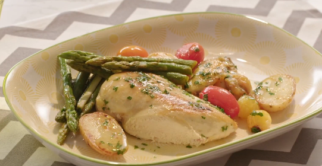

Pollo al horno
Receta de pollo al horno.

Ingredientes
- 8 alitas
- 1 chorro de vino blanco 1 cda
- 1 pechuga de pollo
- Verduras asadas
- Pimienta
- 1 pastilla de Avecrem Caldo de Pollo
- 1 cda de mantequilla
- 1 muslo de pollo
- perejil fresco
Elaboración (Pasos)
- Sazona las alitas, la pechuga y el muslo con
la pimienta y la pastilla desmenuzada de Avecrem
Caldo de Pollo y úntalas con la mantequilla.
Ponlas en una fuente de horno.
- En un bol, mezcla el aceite, el ajo y el perejil.
Añade la mezcla a las piezas de pollo.
- Añade el vino blanco y hornea 45 minutos
a 180 ºC. Sirve acompañado de verduras asadas.
- Servir en un plato.
Volver al menú principal